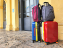

Credits to Food and Drink Destinations
While this list is not a definitive list of what you need to pack, it contains many things that I find to be necessary when traveling in the airport.
Remember: Only pack what you need. While taking one of your stuffed animals can help you feel more comfortable on your flight, trying to cram all of them into your bag will just end up hurting your back and taking up space that you need for essentials. Prioritize the stuff that you need over the stuff that you want.
When it comes to airport travel, there are 3 main types of bags that are talked about. They are known as personal items, carry-on bags, and checked bags.
Personal items are smaller, handheld bags that can easily be carried around, such as backpacks and purses. They are great to store things that you will need to access on the flight or inside the airport. However, most airlines only allow one personal item per person.
Carry-on bags are small suitcases and larger duffle bags that can't be carried around as easily. They are good for solo vacations and people who don't want to deal with the baggage claim after their flight. Unfortunately, when all of the overhead bins are filled, your carry-on bag may have to go under the plane.
Checked bags are large suitcases, and the largest types of bags that are allowed on the airplane. They are mainly used for families traveling together and/or moving to an area far from their old home. Checked bags can't be brought on to the plane, and have to go underneath the plane in a special storage area. If you are travelling with a checked bag, make sure that it does not exceed the maximum weight limit for your airline, as you may have to pay extra money just to bring it with you.
| Luggage Type | Personal Item | Carry-on Bag | Checked Bag |
| Maximum Dimensions | 18" x 14" x 8" | 22" x 14" x 9" | 27" x 21" x 14" |
| Storage | Under the Seat in Front of You | In the Overhead Bins | Under the Plane |
When traveling with young children, or children with developmental disablities, meltdowns can, unfortunately, happen fairly often. However, while some meltdowns are unavoidable, there are some steps you can take as a parent to attempt to avoid a meltdown from occurring.
Firstly, make sure that your child has the tools they need to help themselves manage traveling in this enviornment. This can range from headphones, to figit toys, to a stuffed animal, and many more things. While this may not eliminate the stress that your child is feeling, it can provide a sense of comfort, which can reduce the chances of them totally freaking out.
Secondly, listen to your child. If they are overstimulated and completely inconsolable, don't try to force your child to do things that they don't want to do. Take them to a quiet area away from all of the noise, and let them calm down on their own. I can assure you that your kid is not being dramatic. They are just struggling with the enviornment.
Lastly, if you think that your kid will freak out on the flight, warn the other passengers. People tend to get very upset about crying children on their flights, and knowing beforehand can help them to prepare in case it does actually happen.
In general, service animals are allowed in airports, as long as they are on their best behavior throughout the duration of your time in the airport and on the plane. Emphasis on best behavior.
Throughout your time traveling, your service animal has to be able to remain calm, listen to you, and perform their duties as a service animal. It is not reccomended that you bring in a young and/or inexperienced service animal to try and socialize them, as this may scare other travelers.
Also, don't try to disguise your pet as a service animal, especially if they are reactive. This could not only create a huge disturbance, but also makes it harder for people with actual service animals to be taken seriously.